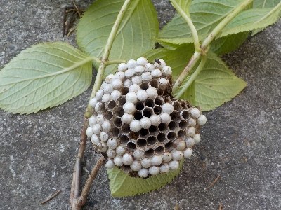
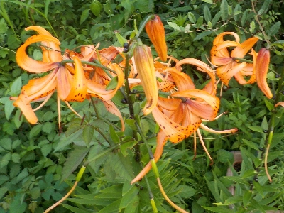
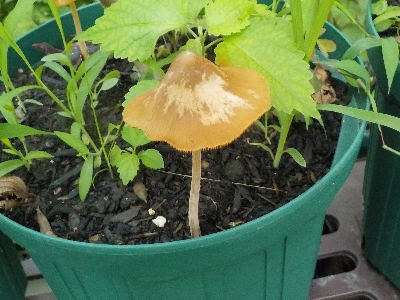
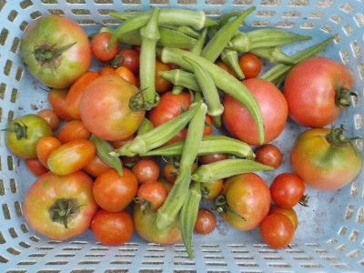
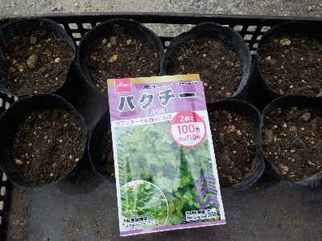
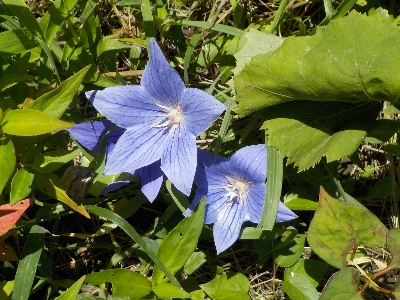
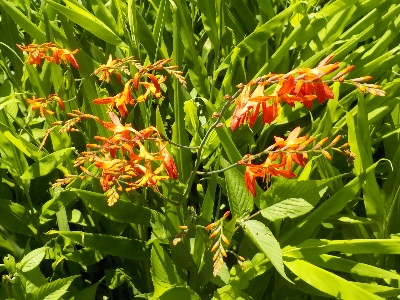
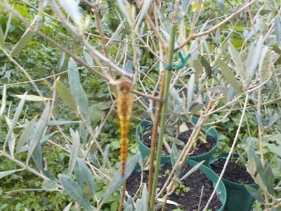

アジサイの剪定中に蜂の巣発見。
2024/07/29

蜂がウロウロしてたので、よく見たら巣がありました。
蜂に気づいて良かったです。
剪定中はハチジェットとハエタタキは常に持って動こうと思いました。
2024/07/29

蜂がウロウロしてたので、よく見たら巣がありました。
蜂に気づいて良かったです。
剪定中はハチジェットとハエタタキは常に持って動こうと思いました。
2024/07/20

一斉に咲いたら一斉に終わります。ユリは派手だけどあっけないですよね。
2024/07/17

雨が続いていたのでキノコが生えました。
沢山植木鉢を持っていますが、キノコがあ生えたのはこの鉢だけです。
この鉢には何か特別なものがあるんだろうな。
2024/07/11

雨が続いて降ったので野菜の収穫をしていませんでした。
今日はちょっとやんだので、水分過剰で割れそうなトマトと、すぐに巨大化して食べれなくなるオクラを優先して収穫しました。
2024/07/08

タネを買ったけど面倒で蒔かずにいました。まだ大丈夫だろうと思い蒔きましたが、パクチーは夏は駄目みたいですね。
なんとなく南国の野菜だと思っていましたが、20度くらいの気温が最適なようです。
秋になったらまたタネまきするつもりです
2024/07/06

背が高くなりすぎて倒れてしまう花って多い気がします。
この桔梗も自力で立てなくなって倒れました。
自然だったら他の草と支えあって伸びるんだろうけど、民家じゃ無理だな。
支柱を立てた方がいいんだろうけど、この場所に桔梗があるのは邪魔なんだな。
2024/07/06

あちこちでキレイに咲いてていいなと思っているんですが、水仙なので毒があるんですよね。
なので間違える可能性があるニラの近くに生えているもの刈り取るようにしました。
毒は怖いです。
2024/07/02

すぐ側まで近づいても動きませんでした。たぶん素手で取れちゃうんだろうな。
とっても無防備です。
過去の日記
熱中症に注意しましょう。